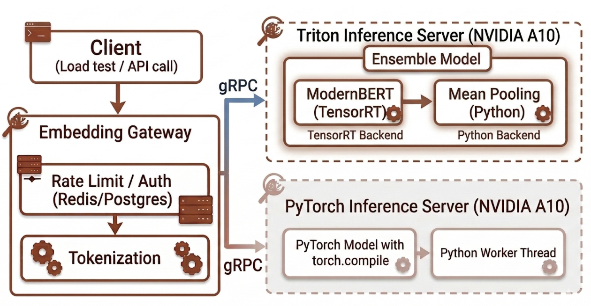

Domain-Specific Embedding Inference with Sub-20ms Tail Latency
Summary
We fine-tuned a commerce-specific semantic embedding model on a ModernBERT backbone. These embeddings power product search in low-latency applications like typeahead, voice search, and recommendations. Our goal: serve shopper query embeddings with sub-20 ms P95 latency under representative load conditions, so search platforms can spend their milliseconds on filtering and reranking.
We achieved P95 API latency of ~18 ms and P95 inference latency of ~3 ms on a commodity GPU (A10) running at sustained load (100 QPS for 5 minutes) using NVIDIA Triton Inference Server with a TensorRT runtime.
This post details our test environment, compares our initial Python stack to the new Triton architecture, and explains the engineering trade-offs that unlocked these speeds.
Our Workload
Our typical workload involves commerce platforms sending short shopper queries between 16 and 32 tokens (e.g., "best marathon training shoes for women"). Real-time commerce search applications demand strict end-to-end embedding SLAs of 20–40 ms.
Architecture
Two-service architecture to optimize performance and scalability: a gateway service on one host handling CPU-intensive tasks and a GPU inference server on another host focused on maximizing GPU utilization. This separation of CPU and GPU workloads offers two main advantages:
- Horizontal scalability: Scale the CPU and GPU components independently based on demand.
- Flexible experimentation: Test new GPU inference server configurations without altering the core domain-specific logic in the gateway service.
Fixed-length sequence bucketing is a pre-processing step in the gateway that optimizes inputs for the GPU. Queries of varying lengths are sorted into "buckets" based on preset lengths (e.g., 16, 32, 64). The system then pads each query only up to its bucket's ceiling, rather than the maximum possible length. For example, a 20-token query is padded only to 32. This method is critical for minimizing batch shape variety received by the inference server, which eliminates wasted computation and is essential for maximizing GPU utilization and achieving ultra-low latency.
We co-located the embedding services with the load testing client to eliminate network latency associated with cross-region communication.
We experimented with two inference stacks:
- Fully customized Python + PyTorch
- Tuned Triton + TensorRT
Data Flow Diagram

Below, we detail the key technical decisions made for each implementation.
Stack 1: Fully Customized Python + PyTorch
We used torch.compile (mode reduce-overhead) and implemented several optimizations:
- Backpressure estimates queue drain time from an exponential moving average of GPU processing rate, rejecting requests before latency spikes. A queue depth cap (2 pending batches) prevents memory pressure.
- CUDA graph-aware threading runs warmup in the GPU worker thread so captured graphs are available where inference executes. A
threading.Eventgate blocks requests until warmup completes. - Zero-copy tensors eliminate copies end-to-end: gRPC raw bytes via
np.frombuffer→torch.from_numpy,torch.stack/torch.catat request and batch boundaries, oneBatchResultper forward pass routed to individual futures — no per-item overhead.
Stack 2: Tuned Triton + TensorRT
- TensorRT + Python backend ensemble: Our model uses custom domain-specific mean pooling, which excludes structural tokens. We kept this logic in a Triton Python backend for rapid development. The transformer runs on TensorRT; the pooling step adds ~0.5 ms.
- TensorRT setup: We export the transformer to ONNX (FP16), then build a TensorRT engine with
trtexecat container startup. Dynamic shapes cover batch 1–256 and sequence lengths 16–512 (load test query templates are capped at 32 tokens). The engine is cached at startup; during inference, no runtime build occurs. - Multiple parallel CUDA streams: We use four parallel CUDA streams, one per model instance, to schedule incoming requests onto the GPU concurrently. More instances boost parallel execution but risk exhausting memory or degrading performance due to scheduler overhead and stream contention past ~4–8 instances. For our A10G/ModernBERT setup, four instances are optimal, providing enough parallelism for bursts at 100 QPS without memory issues or latency degradation.
Trade-Offs: Python + PyTorch vs Triton + TensorRT
We eventually migrated from Python + PyTorch to Triton + TensorRT, reducing P95 inference latency from 7 ms to 3 ms. The key driver was increasing parallel CUDA streams from 1 to 4 for improved GPU utilization, allowing incoming load batches to be split across four model instances.
| Metric | Python + PyTorch | Triton + TensorRT |
|---|---|---|
| P50 | 19.35 ms | 13.47 ms |
| P95 | 48.51 ms | 17.73 ms |
| P99 | 59.23 ms | 26.41 ms |
Table 1: Python + PyTorch vs Triton + TensorRT end-to-end latencies at 100 QPS, batch size 1.
For those who opt to deploy their own inference servers, this is a comparison of both stacks:
| Aspect | Python + PyTorch | Triton + TensorRT |
|---|---|---|
| Increase data parallelism from 1 to 4 | Single GPU worker thread. One batch at a time. | 4 parallel CUDA streams per GPU. Concurrent batches. TensorRT engine. |
| Development overhead | Familiar Python / Hugging Face helped getting started quickly | Ramp up on Triton + TensorRT C++ tooling took longer |
Table 2: Comparison of the Python + PyTorch and Triton + TensorRT architectures.
Load Test: 100 QPS, 300 Seconds, Batch 1
Test Architecture
The load test runs against the production embedding API. The request path is:
Client (EC2, same VPC) → NLB → embedding gateway → inference server
- Gateway — handles authentication, rate limiting, tokenization, and request routing. It uses a process pool for CPU-bound tokenization and an async gRPC client to call the inference server.
- Inference server — the Triton Inference Server with our ModernBERT ensemble (TensorRT transformer + Python mean pooling) runs on a host with a single NVIDIA A10G GPU. Triton's dynamic batching and four model instances per GPU maximize throughput on the single GPU.
Test Configuration
| Parameter | Value |
|---|---|
| Model | ModernBERT-based, 768-dimensional |
| Mode | Query (short search queries, up to 32 tokens) |
| Target QPS | 100 |
| Duration | 300 seconds |
| Batch size | 1 |
| Load source | EC2 instance in same VPC as gateway and inference server |
Table 3: Load test configuration parameters.
Results
End-to-end latency:
| Percentile | Latency |
|---|---|
| P50 | 13.47 ms |
| P90 | 15.58 ms |
| P95 | 17.73 ms |
| P99 | 26.41 ms |
| Mean | 14.21 ms |
Table 4: End-to-end latency distribution.
Triton model latencies:
| Model | P50 | P90 | P95 | P99 |
|---|---|---|---|---|
| modernbert_tensorrt | 2.448 ms | 2.567 ms | 2.601 ms | 2.674 ms |
| mean_pooling | 0.429 ms | 0.498 ms | 0.546 ms | 0.765 ms |
| modernbert_ensemble | 2.884 ms | 3.062 ms | 3.128 ms | 3.259 ms |
Table 5: Server-side Triton model latencies.
Note that percentiles don't add linearly, and inter-model overhead (tensor transfer, Python invocation) is not fully attributed to either model — so the ensemble latency is close to, but not exactly, the sum of the component latencies.
So at batch size 1 and short sequences:
- TensorRT transformer P95: ~2.6 ms
- Full ensemble (transformer + pooling) P95: ~3.1 ms
- End-to-end P95: 17.73 ms (gateway, auth, tokenization, network, inference)
The gap between ~3 ms inference and ~18 ms end-to-end comes from tokenization, rate limiting, auth, Redis, and network — not GPU inference.
Key Takeaways
- Two-tier architecture: Keep CPU and GPU workloads separate for independent scaling and cleaner experimentation — a gateway for tokenization, auth, and routing; an inference server for GPU compute.
- Data parallelism drives throughput: Use data parallelism (four instances per GPU) to increase GPU utilization — the main throughput driver.
- Python vs Triton + TensorRT: Python and Hugging Face are faster to prototype; Triton + TensorRT delivers ~3 ms P95 inference and ~18 ms end-to-end at ~100 QPS. A developer-friendly ensemble design preserves custom domain-specific pooling in Python while achieving production latency with Triton + TensorRT.